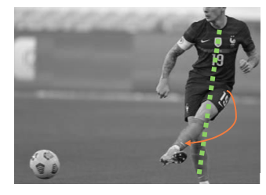
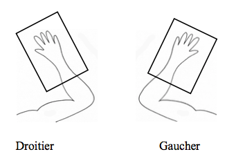

Petit truc et astuce facile à mettre en place pour faciliter le geste graphique N°1
COMMENT PLACER SA FEUILLE OU SON CAHIER POUR ECRIRE ?
Lorsque j’étais à l’école primaire, ma maîtresse m’avait appris à placer ma feuille bien droite devant moi pour écrire (cf photo ci-dessous).
Aujourd’hui, ergothérapeute, je déconseille cette façon de placer sa feuille pour plusieurs raisons.
Placer sa feuille verticalement devant soi contraint davantage l’enfant à croiser sa ligne médiane :
Franchir la ligne médiane désigne la capacité à dépasser une ligne imaginaire qui sépare le corps en deux parties (moitié gauche et moitié droite). Il s’agit donc d’aller un peu plus du côté gauche avec son bras droit ou un peu plus à droite avec son bras gauche. Exemple concret : au foot, le joueur peut tirer avec son pied gauche pour envoyer la balle à droite du coup la jambe gauche va croiser la ligne médiane et tirer à droite.Franchir la ligne médiane désigne la capacité à dépasser une ligne imaginaire qui sépare le corps en deux parties (moitié gauche et moitié droite). Il s’agit donc d’aller un peu plus du côté gauche avec son bras droit ou un peu plus à droite avec son bras gauche. Exemple concret : au foot, le joueur peut tirer avec son pied gauche pour envoyer la balle à droite du coup la jambe gauche va croiser la ligne médiane et tirer à droite.

Placer sa feuille verticalement limite les mouvements proximaux du bras scripteur :
Les mouvements proximaux sont les mouvements produits par les muscles au niveau de l’épaule grâce aux articulations entre plusieurs os : humérus, clavicule et omoplate. Ces mouvements assurent la stabilité du bras pour l’écriture.
Placer sa feuille verticalement empêche des mouvements fluides du poignet :
Lorsque l’on écrit sur une ligne, de gauche à droite, le poignet doit être stable mais il bouge très délicatement. Il passe d’une légère flexion lorsque nous écrivons à gauche de la feuille puis une légère extension lorsque nous écrivons en fin de ligne à droite.
Un mauvais positionnement de la feuille freine ces très légères variations de posture du poignet et entraîne des tensions musculaires qui engendreront probablement des douleurs.
Placer sa feuille verticalement devant soi limite la dextérité manuelle :
L’écriture est le résultat de tous petits mouvements distaux des doigts, c’est-à-dire de tous petits gestes du bout des doigts. Il faut avoir un déliement suffisant des doigts pour pouvoir manier son stylo. Le bon positionnement du bras est indispensable pour pouvoir effectuer des mouvements fins avec les doigts.
CONSEILS D’ERGO POUR BIEN PLACER SA FEUILLE :
Placer sa feuille dans le prolongement du bras :

NB : Ces conseils peuvent améliorer le graphisme mais ils ne remplacent pas une analyse plus précise des difficultés graphiques chez un ergothérapeute.